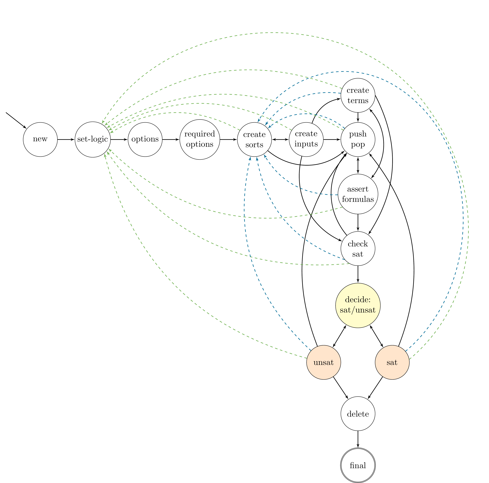

FSM
{kind=link}
-
class murxla::FSM
The finite-state machine (FSM).
Valid API call sequences are generated based on an API model which is implemented as a weighted finite-state machine (FSM). States correspond to the current state of the SMT solver, and transitions have a weight, a pre-condition, and an associated action.
Each State of the FSM may provide a pre-condition that defines when it is legal to transition into that state. Taking a transition also executes its action. The associated action of a transition may be empty, in which case it leads to the next state without calling the solver. The pre-condition of a transition and the pre-condition of its next state define the conditions under which the transition can be selected, whereas its weight determines the probability of it being taken in cases where multiple transitions are enabled at the same time.
The weight of a transition is defined via its priority when adding transitions to a state via :cpp:func:
murxla::State::add_action(). A priority of1indicates highest priority,UINT32_MAXlowest priority, and0disables the transition.A transition with an associated action is defined by adding a :cpp:class:
murxla::Actionto a state via :cpp:func:murxla::State::add_action()while defining its priority and next state. Similarly, empty transitions are added as instances of :cpp:class:murxla::Transition.By default, the FSM implements an API model that captures the functionality and constraints defined in the SMT-LIB standard. Its associated actions call the Generic Solver API. Solver wrappers may extend the model with solver-specific states and actions.
We distinguish three configuration kinds (State::ConfigKind) of states: regular states, decision states and choice states (see State for more information). We further identify one state as the initial state, and one state as the final state.
A decision state is a state that only serves as decision point with a single point of entrance and only specific transitions (the choices to be made) out of the state. A decision state is not to be extended with any other actions other than the transitions that represent the choices this decision state has been created for. From a decision state, we may only transition into the choice states that represent the valid choices for this decision.
A choice state is a state that represents a valid choice for a specific decision. It represents a very specific solver state that is a precondition for specific actions (solver API calls) to be executed. Choice states may only be transitioned into from their corresponding decision state.
As an example, we use a decision state State::DECIDE_SAT_UNSAT for handling different solver states after a satisfiability check in state State::CHECK_SAT. From State::CHECK_SAT, we transition into State::DECIDE_SAT_UNSAT, from where we transition into either choice state State::SAT (when the result is sat or unknown) or State::UNSAT (when the result is unsat). Each choice state configure actions to make additional queries to the solver under the specific premise that a check-sat call has been issued and the satisfiability result is either sat or unsat.
Use FSM::new_decision_state() for creating decision states, FSM::new_choice_state() for creating choice states, and FSM::new_final_state for creating the final state.
Public Functions
-
FSM(RNGenerator &rng, SolverSeedGenerator &sng, Solver *solver, SolverProfile &solver_profile, std::ostream &trace, SolverOptions &options, bool arith_linear, bool trace_seeds, bool simple_symbols, bool smtlib_compliant, bool fuzz_options, std::string fuzz_options_filter, statistics::Statistics *stats, const TheoryVector &enabled_theories, const TheorySet &disabled_theories, const std::vector<std::pair<std::string, std::string>> solver_options, bool in_untrace_replay_mode)
Constructor.
-
FSM() = delete
Default constructor is disabled.
-
SolverManager &get_smgr()
Get a reference to the associated solver manager.
-
std::unordered_map<uint64_t, std::string> get_action_id_mapping()
Return a mapping from Action id to Action kind. Will be empty if not called after FSM::configure().
We need this for printing statistics (shared memory) in the parent process (which are filled in by the child process), to be able to map the data in the statistics struct correctly to the actions.
-
State *new_state(const State::Kind &kind, std::function<bool(void)> fun = nullptr, bool ignore = false, bool is_final = false, State::ConfigKind config = State::ConfigKind::REGULAR)
Create and add a new state.
Use FSM::new_decision_state() for creating decision states, FSM::new_choice_state() for creating choice states, and FSM::new_final_state for creating the final state.
- Parameters
kind – The kind of the state.
fun – The precondition of the state.
ignore – True if the state should be ignored when adding actions to all states (add_action_to_all_states), or adding all configured states as next state for a transition (add_action_to_all_states_next).
is_final – True if state is a final state.
config – The configuration kind of the state.
- Returns
The created state.
-
State *new_decision_state(const std::string &kind, std::function<bool(void)> fun = nullptr)
Create and add a new decision state.
A decision state is a state that only serves as decision point with a single point of entrance and only specific transitions (the choices to be made) out of the state. A decision state is not to be extended with any other actions other than the transitions that represent the choices this decision state has been created for. From a decision state, we may only transition into the choice states that represent the valid choices for this decision.
As an example, we use a decision state #DECIDE_SAT_UNSAT for handling different solver states after a satisfiability check in state #CHECK_SAT. From #CHECK_SAT, we transition into #DECIDE_SAT_UNSAT, from where we transition into either choice state #SAT (when the result is sat or unknown) or #UNSAT (when the result is unsat). Each choice state configure actions to make additional queries to the solver under the specific premise that a check-sat call has been issued and the satisfiability result is either sat or unsat.
Note
A decision state is never final.
- Parameters
kind – A unique string identifying the state.
fun – The precondition for transitioning into the state.
- Returns
The created decision state.
-
State *new_choice_state(const std::string &kind, std::function<bool(void)> fun = nullptr, bool is_final = false)
Create and add a new choice state.
A choice state is a state that represents a valid choice for a specific decision. It represents a very specific solver state that is a precondition for specific actions (solver API calls) to be executed. Choice states may only be transitioned into from their corresponding decision state.
As an example, states #SAT and #UNSAT are choice states.
Note
A choice state can be final.
- Parameters
kind – The kind of the state.
fun – The precondition for transitioning into the state.
- Returns
The created choice state.
-
State *new_final_state(const std::string &kind, std::function<bool(void)> fun = nullptr)
Create and add a new final state.
Final states are always ignored when adding actions to all states (add_action_to_all_states), or adding all configured stats as next state for a transition (add_action_to_all_states_next).
Note
A final state is never a decision state.
- Parameters
kind – The kind of the state.
fun – The precondition for transitioning into the state.
- Returns
The created choice state.
-
template<class T>
void add_action_to_all_states(T *action, uint32_t priority, const std::unordered_set<std::string> &excluded_states = {}, State *next = nullptr) Add given action to all configured states (excl. the states defined in d_actions_all_states_excluded and the given excluded states).
To be processed after configuration of solver-specific states/actions. The actual weight of the action is computed as priority/sum, with <sum> being the sum of the priorities of all actions in that state.
action : The action to add to all states (with exceptions). priority : The priority of the action, determines the weight, and thus the probability to choose running the action. The actual weight of the action is computed as sum/priority, with <sum> being the sum of the priorities of all actions in that state. excluded_states: The states to exclude the action from, additionally to the states that are always excluded (defined in d_actions_all_states_excluded). next : The state to transition into after running the action. Optional, if not set, we stay in the current state.
-
template<class T>
void add_action_to_all_states_next(T *action, uint32_t priority, State *state, const std::unordered_set<std::string> &excluded_states = {}) Add transition with given action from given state to all configured states (excl. the states defined in d_actions_all_states_excluded and the given excluded states).
To be processed after configuration of solver-specific states/actions. The actual weight of the action is computed as priority/sum, with <sum> being the sum of the priorities of all actions in that state.
action : The action to add to all states (with exceptions). priority : The priority of the action, determines the weight, and thus the probability to choose running the action. The actual weight of the action is computed as sum/priority, with <sum> being the sum of the priorities of all actions in that state. state : The state to transition from. excluded_states: The states to exclude the action from, additionally to the states that are always excluded (defined in d_actions_all_states_excluded).
-
void check_states()
Check configured states for unreachable states and infinite loops.
-
void run()
Run state machine.
-
void configure()
Configure state machine with base configuration.
-
void untrace(const std::string &trace_file_name)
Replay given trace.
-
FSM(RNGenerator &rng, SolverSeedGenerator &sng, Solver *solver, SolverProfile &solver_profile, std::ostream &trace, SolverOptions &options, bool arith_linear, bool trace_seeds, bool simple_symbols, bool smtlib_compliant, bool fuzz_options, std::string fuzz_options_filter, statistics::Statistics *stats, const TheoryVector &enabled_theories, const TheorySet &disabled_theories, const std::vector<std::pair<std::string, std::string>> solver_options, bool in_untrace_replay_mode)